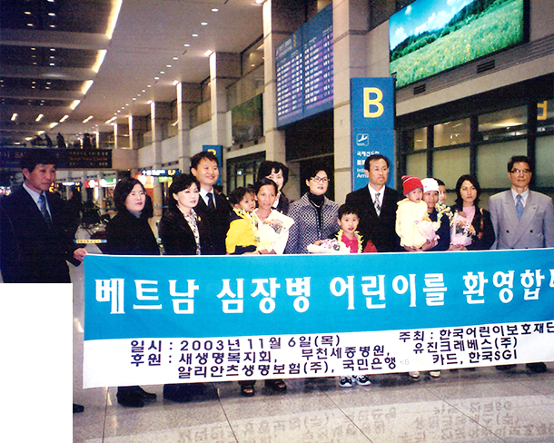

선의의료재단은 큰 돈이 아니더라도 따뜻한 마음이 모이면 어려운 이웃들에게 큰 힘이 될 것
이라는 믿음으로 1982년 여주기 이사장님께서 설립한 ‘선의(善意)은행’이 재단의 모태입니다.
1982년 모두가 궁핍했던 시절이었지만, 어떤 이는 자신의 기술을, 어떤 이들은 기도와 물질을
선의은행에 예탁 해 주었고 선의은행은 굶는 이들에게 밥을, 공부가 필요한 이들에게는
장학금을, 가난한 부부들에게는 무료 결혼식을 지원하며 어려운 이웃들을 찾아
따뜻한 선의를 전달 했습니다.
이웃들에게 따뜻한 마음을 전하기 위해 시작한 일들은 1984년 공식 기관으로 인준되어
보건복지부에서 ‘사회복지법인 한국선의복지재단’이라는 명칭으로 태어나 관악구 봉천동
꼭대기 복지관을 건립 하여 운영하는 등 지역주민들의 복지를 위해 힘써왔습니다.

선의재단의 해외의료복지사업의 첫 시작
21세기가 도래 할 즈음, 선의재단은 우연히 베트남에 방문하게 되면서 개발도상국의 수많은
어린 아이들이 적절한 시기에 치료를 받지 못하거나, 치료받을 의료시설이 절대적으로 부족하여
사망하는 일들이 빈번하다는 사실을 현실적으로 체감하게 되었습니다.
눈 앞에서 죽어가는 아이들을 차마 볼 수 없어 선천성 심장병 을 가진 세명의 베트남 아이들을
한국에 데리고 와 수술을 받게 해 주고 고국으로 다시 건강하게 돌아가게 한 것이
재단의 해외의료복지사업의 첫 시작입니다.
이렇게 ‘개발도상국 선천성 심장병 초청 수술사업’이라는 이름으로 시작된 의료복지사업은
2005년에는 베트남에 선의 적십자 병원을 건립 및 무상 운영하며 의료서비스를 진행하고,
이동진료를 위해 차량을 개조해 오지 산간에 거주하는 소외된 지역의 주민들을 위해서도
의료복지사업을 진행하며 세상에 선의를 전달하고 있습니다.
지난 36년간 복지재단의 틀에서 의료복지사업들을 진행해왔던 선의의료재단은 보다 전문적이고 체계적인 의료복지서비스를 전달하고자 2016년 의료법인 선의의료재단을 설립하였습니다.
우리의 이웃들에게 우수한 의료시설과, 서비스를 제공함과 동시에, 저개발 국가 속 취약계층의 의료지원 사업을 진행하며 세상의 고통 받는 많은 이들에게
희망을 드릴 수 있는 선의의료재단이 되도록 최선을 다하겠습니다.